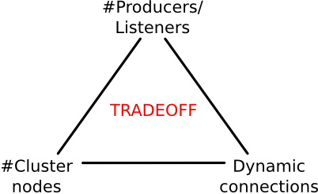

RoQ (pronounce /rɒkˈjuː/, as in "Rock You") is the first implementation of EQS, a new architecture designed for efficient messaging in the cloud.
Traditionally, MOMs are not designed to support elastic scaling. This means that in a cloud context, they may very quickly become a bottleneck in terms of performance.
RoQ has been designed from day 1 to answer this problem. Its architecture is elastically scalable. This includes three properties:
RoQ started as a research project within EURA NOVA (http://euranova.eu) and has since then evolved into an open-source project. This means that anyone can download the code, see how it works, contribute or even fork the code to build upon RoQ.
As already explained, RoQ, with its distributed architecture and its ability to be quickly deployed on a cloud, is designed to ease the usage of MOM in a cloud context.
Currently, the major competitor of RoQ is Amazon SQS. However, a benchmarking article by the Cloud Computing Center (see the complete article to learn more) points out the inability for SQS to scale properly. RoQ is there to solve this problem!
Interested? You have several options to go further:
RoQ is a message oriented middleware (MOM), built from the start with elastic scalability in mind.
In the current Message Oriented Middleware (MOM) landscape, most of the popular products allow setups distributed on a cluster of machines. However global performance in these clustered MOMs is a tradeoff on the amount of node in the cluster, the amount of connected clients and the dynamic nature of the connections. Indeed, all the nodes in these messaging clusters share the state of the messaging service. As the size of the cluster grows, the overhead in managing the shared state depends on the amount of clients connected (states to maintain) and the dynamic nature of the connections (states update rate) and thus limits the message processing ability of the cluster.
On the other side, the elastic scalability is the ability to scale by starting up new instances in the service. Cloud computing platforms enable applications to make use of elastic scalability: instances are started in an on-demand scheme when more perfomance is needed, and are shut down when the load comes back to normal. This kind of applications requires stateless and distributed elements in the architecture.
RoQ is the implementation of a MOM suitable for deployment on the cloud which enables elastic scaling. It is suited for environments where a big amount of clients and messages need to transit on the MOM.
At a 10,000 feet of altitude, the architecture of RoQ comprises the following distributed elements:
The Monitoring, Queue Management and Rules and Scaling Management can be architecturally positioned on the Cloud Infrastructure Management. However given the current segmentation in the API of the Cloud management tools, we also deliver these components in stand-alone packages.
The complete, technical documentation of RoQ is hosted on our github wiki.
RoQ is Open Source. It is distributed under the Apache License, Version 2
To test RoQ, you can grab the RoQ code on GitHub.
Detailed instructions to start testing quickly are available on the "Run The Code" page of the RoQ wiki.
RoQ is in its first phase of development. Contributions are welcome and if you feel you've got what it takes, dive in!
There are several levels of contribution possible in the RoQ community:
RoQ readers are people interested in RoQ that have ideas to improve it. They mainly interact with the RoQ community through the mailing list and github.
The main contributions from RoQ readers is feedback on the code, the usage they have of RoQ or even small code fixes sent by mail or GitHub pull requests.
Anyone can be a RoQ Reader.
RoQ rookies are people that have gained some knowledge on the RoQ code and wish to contribute code improvements, bug fixes, ...
They help other users on the mailing list and send patches by mail or GitHub pull requests. The code contribution is then reviewed by one of the RoQ committers and added to the codebase if deemed relevant.
Anyone can be a RoQ Rookie.
RoQ committers are trusted RoQ developpers. They have commit access to the repository. They review pull requests, write code and patches and assist the community through the mailing list.
You can request to become a RoQ committer if you have a proven track record of fruitful interactions with the RoQ community. Basic KPIs are the number of submitted patches, the volume and quality of activity on the mailing list, ...
RoQ committer role attribution is subject to approval by the RoQ Board. The decision and its motivation is published on the mailing list.
The RoQ board is the leading body of the RoQ project. Its members are elected by and amongst RoQ committers. The initial board is composed of the initial project contributors. Board election is done once a year.
There are other ways you might help with the project. The first step in your involvment?
An EQS is a distributed message queue designed for clouds that enables a linear scalability when new nodes are added to the cluster. As a result, the number of publishers-subscribers and the message load are not a limit anymore!
EQS was first presented at the IEEE 2011 CloudCom conference.
The community can exchange through a mailing list hosted on Google Groups.
Anyone is free to join the discussion! Find help or involve yourself in the community...